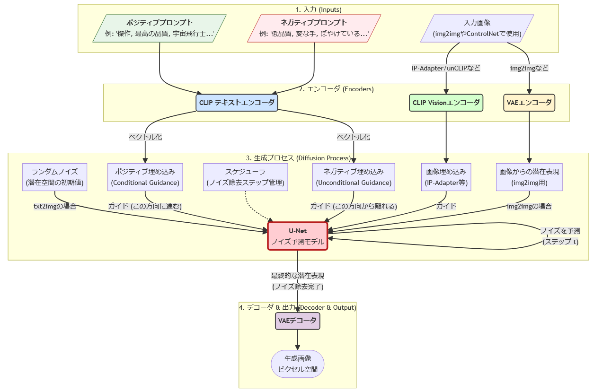

ComfyUI のインストールと使いこなしに必要な Diffusion モデル概要入門
今回は、 ComfyUI をインストールし、 自分で簡単なワークフローを構築するために必要な Diffusion モデルの概要について説明します。
なお、以下の文書の想定読者は、 コンソールでコマンドを叩く程度の IT リテラシーを持っていることを前提にしています。
インストール先は Windows, Linux, Mac どれも対応しています。
ComfyUI インストール
ComfyUI は Python で開発されています。
今現在 Python のインストールは uv で行なうのがもっとも簡単・便利で早いので、 まずは uv のインストールから始めます。
基本的に以降の作業は、コンソールからコマンドを実行することが前提です。
uv インストール
まずは以下にアクセスします。
このサイトの Installation を参照すると、以下を実行するように書かれているので、 それをコンソールで実行します。
- linux, mac
curl -LsSf https://astral.sh/uv/install.sh | sh
- windows
powershell -ExecutionPolicy ByPass -c "irm https://astral.sh/uv/install.ps1 | iex"
上記を実行すると、 uv コマンドがインストールされ、パスも設定されます。 このパス設定を手早く反映するため、コンソールを新しく開きなおします。
uv のプロジェクト作成
uv を使って Python 環境をセットアップするため、まずはプロジェクトのフォルダを作成します。
フォルダを作成する場所はどこでも良いです。 ただ、全角やスペースを含めるのは止めましょう。
コンソールから、その作成したフォルダに移動し以下を実行します。
- uv プロジェクトを作成
- 使用する python の設定
cd "作成したフォルダへのパス" uv init . uv python pin 3.12
ここで python 3.12 を指定していますが、この辺りはその時々に合せてください。 まぁ、あと数年は 3.12 で大丈夫だとは思います。
以降の作業は、このフォルダ直下で実行します
このフォルダ内には、 pyproject.toml ファイルが作成されます。 このファイルは後程編集します。
ComfyUI のダウンロードと展開
以下から最新の Source code (zip) をダウンロードします。
<https://github.com/comfyanonymous/ComfyUI/releases>
なお、上記には windows_portable_nvidia.7z 的なファイルがありますが、 今回は windows ユーザも Source code (zip) をダウンロードしてください。
ダウンロードした zip を、上記で作成した uv プロジェクトのフォルダに展開してください。
展開すると以下のようなディレクト構造になります。
--/uv プロジェクト--/ComfyUI-?.?.??--/comfy
/models
ComfyUI-?.?.?? は展開した ComfyUI のバージョンに読み替えてください。
GPU 対応の Pytorch 設定準備
次の設定を、展開したフォルダ内にある pyproject.toml の末尾に追記します。
|
|
ここでは CU128 (Cuda12.8) を指定していますが、 適宜使用する Cuda のバージョンに合せて指定する必要があります。
なお、CU128 は RTX 5000 シリーズまで対応するバージョンです。 RTX6000 が出るまでは、とりあえず CU128 を使っておけば大丈夫だと思います。
torch の cuda 対応確認
正常にインストールできていることを確認するために、次を実行します。
uv tree --depth 1
ここで、次の 3 つが表示されていれば正常です。
- torch +cu128
- torchaudio +cu128
- torchvision +cu128
なお、 128 の部分 は適宜読み替えてください。
ComfyUI が必要とするパッケージのインストール
以下を実行し、ComfyUI が必要とするパッケージをインストールします。
uv add --requirements ComfyUI-?.?.??/requirements.txt
ComfyUI の起動
ここままで、ComfyUI を起動するまでの準備が出来ました。
次に以下を実行し ComfyUI を起動します。
uv run ComfyUI-0.3.44/main.py
少し待つと以下が表示されます。
To see the GUI go to: http://127.0.0.1:8188
上記が表示されたら、 表示されている URL の <http://127.0.0.1:8188> をブラウザでアクセスします。
何かフローが表示されているかもしれないですが、一旦それらは無視してください。
サンプルワークフロー
ComfyUI は、さまざまな手法・モデルを利用して画像を生成できます。
ここでは、最も基本である SD1.5 (stable diffusion version 1.5) を使って説明します。
SD1.5 は、生成される画像のクオリティはほどほどですが、 短時間で生成できるので Diffusion モデルの基本構造を理解するには適しているモデルです。
まずは SD1.5 のワークフローを開きます。
ここで、 次のファイルをダウンロードしてください。
次にダウンロードしたファイルを ComfyUI の画面にドラッグ&ドロップします。
すると、「モデルが見つかりません」というメッセージが表示されていると思います。 これは、 このサンプルのワークフローに必要なモデルファイルが ComfyUI に登録されていないことを示しています。
そこで、メッセージの下に表示されているダウンロードボタンを押して モデルファイルをダウンロードします。
ダウンロードが終了したら、 そのファイルを ComfyUI をインストールしたディレクトリの下の models/checkpoints に移動します。
次にエラーメッセージを close して、 下段中央の実行するボタンを押します。
これでワークフローが実行され、画像が生成されます。
このワークフローの中央付近に、「CLIPテキストエンコード(プロンプト)」と表示されている ボックスが 2 つあります。 このボックスでどのような画像を生成するかを指定します。 上のボックスが生成したい画像の内容を指定し、 下のボックスが生成する画像の中に含めたくない内容を指定します。
上のボックスで指定する文字列のことをプロンプトと言い、 下のボックスで指定する文字列のことをネガティブプロンプトと言います。
プロンプトを編集、ワークフローを実行し、結果に反映されることを確認してください。
Diffusion モデル概要
ComfyUI は、Diffusion モデルのコア技術をパーツとして定義し、 それを GUI 上で簡単に組み合わせて使うツールです。
つまり、コア技術のパーツが何をするものなのか？を知らないと、 自分で組み合わせを変えるのが困難です。
今回は、 Diffusion モデルの概要を理解することで、 自分で ComfyUI のワークフローをカスタマイズすることをゴールとします。
そんな訳で前置きが長くなりましたが、以降が本題です。
Diffusion モデルの基本的な考え方
Diffusion モデルは、次の考え方で成り立っています。
- 画像に対して徐々にノイズを付加する
- ノイズを付加するステップを繰り返し、完全なノイズとする
- 上記のノイズを付加するステップの逆を AI で学習する
- つまり、ノイズが加えられているテンソルから、 ノイズを除去したテンソルを推論する AI モデルを構築する
これだけ聞くと「論理的には分かるけど、そんなの上手くいく訳がない机上の空論だ」と 思うでしょう。 この説明を初めて聞いたとき私はそう思いました。というか今でもそう思っています。 ですが、実際にそれで動いているのが Diffusion モデルです。
ただ、少しだけ補足があります。 それは、ノイズを加える対象は画像データそのものではなく、 画像から潜在空間と呼ばれる画像データよりもサイズが小さいテンソルデータです。 潜在空間は、画像の特徴を表現する空間です。 例えば草原を走っている馬の画像を潜在空間にエンコードした場合 「草原、走る、馬」が特徴パラメータとして変換されるようなイメージだと考えれば良いです。 あくまでイメージであって、実際は人間にとって分かり易い特徴ではなく、 AI にとって処理しやすい特徴に変換されます。
潜在空間の大きさは、Stable Diffusion 1.5 (SD1.5) では (4,64,64) のテンソル空間です。 なお、 SD1.5 の画像解像度は (3,512,512) です。
なぜ画像データを直接扱うのではなく潜在空間を扱うのかというと、 一番の理由は計算量の削減です。 ノイズ予測の計算量が非常に大きいので、 その計算量を少しでも下げるため潜在空間に圧縮しています。
そして、2番目の理由は「ノイズ耐性の向上」です。 どういうことかと言うと、直接画像を対象にノイズ除去処理を行なうと、 少しノイズが残っているだけでもそのノイズが目立ってしまいます。 一方で、特徴量として潜在空間に変換することで、 多少ノイズが載っても、ある程度特徴に沿った画像を生成出来ます。
また、ノイズを学習する際に、 潜在空間だけでなくパラメータとして別のテンソルデータを処理します。 「このテンソルデータが何か？」というと、 元の画像を説明する文字列をテンソル化したデータです。
この文字列こそがプロンプトとなります。
Diffusion モデルは「ノイズを除去する過程を学習する」と説明しましたが、 この元の画像を説明するテンソルデータを学習する際のパラメータに含めています。
これによって、「プロンプトを与えると、そのプロンプトに沿った画像を生成する」という ことが可能になってます。
なお、この潜在空間・プロンプトを使う手法は Diffusion モデルそのものというよりは、 Diffusion モデルの改良版と言った方がいいでしょう。
Diffusion モデルのブロック図
次の図は、Diffusion モデルを使って画像を生成する際のブロック図です。

Diffusion モデルの階層は、大まかに次の 4 層に分かれています。
- 入力
- エンコーダ
- 生成
- デコーダ
大雑把に説明すると、以下になります。
- プロンプトを入力し
- 入力データをエンコードしてテンソル化し
- 潜在空間にノイズを付加して、潜在空間とプロンプトのテンソルからそのノイズを予測して除去し
- ノイズが除去されたテンソルから新しく画像を生成する
入力
入力には文字列と画像の2つがあります。
次のステップで、どちらもテンソルに変換されます。
なお、入力文字列に従って新しく画像を生成することを text2image、 入力画像に従って新しく画像を生成することを image2image と言います。
エンコーダ
入力データをテンソルに変換するのがエンコーダの役割りです。
エンコーダには次の 3 つの種類があります。
- CLIP テキストエンコーダ
- CLIP Vision エンコーダ
- VAE エンコーダ
上の 2 つの CLIP エンコーダが、 潜在空間に与えるパラメータのテンソルに変換するエンコーダです。 この潜在空間に与えるパラメータのテンソルを「ガイド」と言います。
3つ目の VAE エンコーダは、画像から潜在空間に変換するエンコーダです。
ComfyUI で実行したワークフローにあった「CLIPテキストエンコード(プロンプト)」は、 上記の 「CLIP テキストエンコーダ」 を使って指定文字列をエンコードする処理を示しています。 また、この「CLIPテキストエンコード(プロンプト)」には「クリップ」という入力があります。 この「クリップ」は、「CLIP エンコーダ」そのものを示します。 つまり『エンコードにどの「クリップ」を使うか』を指定しています。
なぜこの「クリップ」の指定が必要かと言うと、 モデルによって使用する「クリップ」が異なるケースがあるためです。
生成
ここでは、テンソルに変換された入力データを使って、画像を生成する処理を行ないます。
具体的には次を行ないます。
- 潜在空間に指定されているシードを使ってノイズを付加する
- ガイドと潜在空間からノイズを除去する
- 指定のステップ数分ノイズを予想し除去を繰り返す
ノイズを予想するのが U-Net です。
ComfyUI で実行したワークフローにあった「Kサンプラー」は、 この生成部分を制御するボックスです。
入力
Kサンプラーには、次を入力します。
- モデル
- ポジティブ
- ネガティブ
- 潜在画像
モデルは U-Net モデル、 ポジティブ・ネガティブはガイドパラメータ、 潜在画像はノイズを付加する潜在空間を入力します。
ComfyUI で実行したワークフローの接続を確認すると分かり易いです。
なお、ワークフローにある「空の潜在画像」は、 その名の通り初期値を持たない潜在空間テンソルを生成するボックスです。
パラメータ
この「Kサンプラー」のパラメータには次があります。
- シード
- 生成後の制御
- ステップ
- cfg
シードは、潜在空間に加えるノイズを制御します。 シードを変えれば潜在空間に変わるノイズが変わるので、 生成される画像も変わるということになります。
生成後の制御は、「画像を生成した後にシードをどうのように更新するか」を指定します。 上述した通り、シードによって生成画像が変わるので、 同じプロンプトで多様性のある画像を生成したい場合は、 画像生成後にシードを変更することで様々な画像を生成できます。 一方で、プロンプトを検討したい場合などはシードを固定することで、 プロンプトが生成画像に与える影響を見極めることが出来ます。
ステップは、「ノイズの除去に何ステップかけるか」を指定します。 ステップが少ない程、高速に画像を生成できますが、 少な過ぎると正しくノイズを除去しきれないことがあります。
cfg は、ガイドの強さを指定します。 cfg を上げる程、ガイドに強く従った画像を生成できる傾向がありますが、 上げ過ぎると正しくノイズを除去できないことがあります。
ステップ開始, 終了
ComfyUI の「Kサンプラー」には、「Kサンプラー(高度)」という別のタイプがあります。
これは、通常の「Kサンプラー」に以下を追加しています。
- ステップ開始
- ステップ終了
これらが「何なのか？」というと、 潜在空間に対してノイズ付加と除去を行なうタイミングを指定します。 これによって image2image の元画像の影響度をコントロールできます。
上述した通り、 Diffusion モデルでは潜在空間に対してノイズを付加します。 これは、Kサンプラーの「ステップ」で指定したステップ数分付加したときに、 完全なノイズ状態になるようにノイズを付加します。
「ステップ開始」は、ノイズを完全には付加せずに、 指定したステップ数分のノイズを除去した状態にする、ということです。
例えば「ステップ」が 20 で、「ステップ開始」が 10 なら、 入力の潜在空間に付加されるノイズは半分程度です。 つまり、生成される画像は入力の潜在空間に大きく影響を受けるようになります。
さらに「ステップ開始」が 20 なら、ノイズは付加されず、 入力の潜在空間そのままを使って画像が生成されます。
「ステップ終了」は、ノイズ除去の工程に複数の「Kサンプラー」を使用する際に利用します。
たとえばプロンプトを2つ用意し、それぞれ プロンプトA, プロンプトB とした場合、 ステップ 0 〜 10 までをプロンプトA、 ステップ 10 〜 20 までをプロンプトB で生成する、 というようなときに利用します。
こうすることによって、 大雑把な指定をプロンプト A で、 細部の詳細な指定をプロンプト B で指定することにより、 1つのプロンプトでまとめて指定するよりも意図に沿った画像を生成できる場合があります。
デコーダ
ここでは、ノイズが除去された潜在空間をデコードして画像を生成します。
ComfyUI で実行したワークフローの「VAE デコード」のボックスが、その役割です。
なお、潜在空間は画像を特徴量に変換した空間です。 この特徴量の空間から実際の画像に変換するのが VAE デコーダの役割です。
そして、VAE デコーダのこの役割によって、 潜在空間のノイズを取り切れなく多少残っていても、 生成される画像はそれなりに見れる画像となります。
ComfyUI で実行したワークフローの「VAE デコード」には、以下を入力します。
- サンプル
- VAE
サンプルは、デコードする潜在空間です。 VAE は、デコードに利用する AI モデルを指定します。
VAE デコードの出力は画像データです。 ワークフローでは、この画像データを保存するようになっています。
Diffusion モデルのブロック図と ComfyUI のワークフロー
上記で説明した通り、 Diffusion モデルのブロック図と ComfyUI のワークフローのボックスは対応しています。
ここまで分かると、 ComfyUI のボックスをどのように接続すれば良いのかが分かると思います。
チェックポイントについて
Diffusion モデルのチェックポイントには、 モデル(U-Net), CLIP, VAE がセットで保持されています。
これらはセットで初めて正常に画像を生成できます。
一方で、これらは個々で入れ替えることも可能です。
ただし、それぞれ扱えるテンソルの次元数が決っているので、 入れ替えるには入れ替え前と入れ替え後とで、 そのテンソルの次元数が一致している必要があります。
まとめ
ComfyUI 使いこなしに必要な最低限な知識について説明してきました。
ここまでくれば、あとは実際に動かしながら色々な画像を作っていくのが一番です。